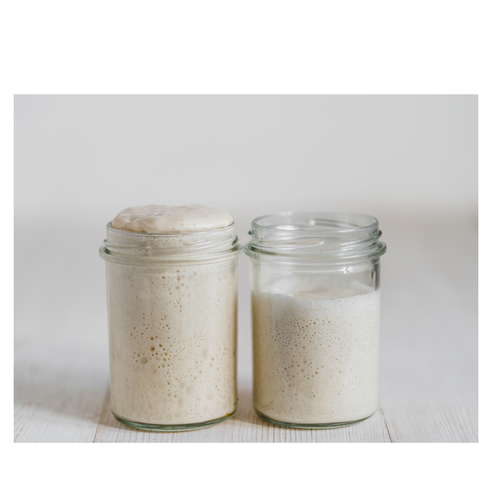

01
KLARHEDSTEGN
Pålidelig fordobling
Den fordobler sit volumen efter fodring på omkring 6–8 timer, over gentagne fodringer.
TRIN 04 · FRA TREDJE DAG
Fodr cirka hver 12. time, og læg mærke til udviklingen. Lad tegnene i glasset vise dig vejen — ikke datoen i kalenderen.
HVER FODRING · CA. HVER 12. TIME
Behold 50 g surdej. Kassér resten. Tilsæt 50 g hvidt hvedemel og 50 g postevand.
Bland, til der ikke er tørt mel. Læg låget løst på, og lad glasset stå ved stuetemperatur.
For eksempel ved morgenkaffen og igen om aftenen, cirka 12 timer senere. Knyt det til noget, du allerede gør.
Markér gerne niveauet efter fodring. Læg mærke til bobler, vækst og duft over flere fodringer.

Surdejen kan være livlig én dag og stille den næste. Fortsæt fodringerne, og se efter pålidelig aktivitet over gentagne fodringer.
TEGN, IKKE EN BESTEMT DAG
Se efter disse tegn sammen. Nogle surdeje er længere tid om at nå hertil. Fortsæt rutinen, hvis udviklingen endnu ikke er stabil.
01
KLARHEDSTEGN
Den fordobler sit volumen efter fodring på omkring 6–8 timer, over gentagne fodringer.
02
KLARHEDSTEGN
Der er mange bobler i blandingen — ikke kun en enkelt boble i overfladen.
03
KLARHEDSTEGN
Duften er behageligt syrlig. Duft og kig; smag aldrig på rå surdej.
Smag ikke på rå surdej. Ser du skimmel eller pink/orange misfarvning, skal du kassere hele surdejen og starte forfra i et rent glas. Det er ikke nok at skrabe det væk.
IKKE TIL DIN NYE SURDEJ ENDNU
Når kulturen er stabil og moden, kan den vedligeholdes i køleskabet med omtrent ugentlig fodring. Det er en anden rutine end opstarten. Før du bager igen, skal du genskabe stabil aktivitet med fodringer ved stuetemperatur.
VORES AFICIONADO KILDER:
Metode: King Arthur Baking, “Sourdough Starter” (februar 2026). Udvikling: The Perfect Loaf. Sikkerhed: King Arthur Baking. Fagligt grundlag gennemgået 6. oktober 2026.